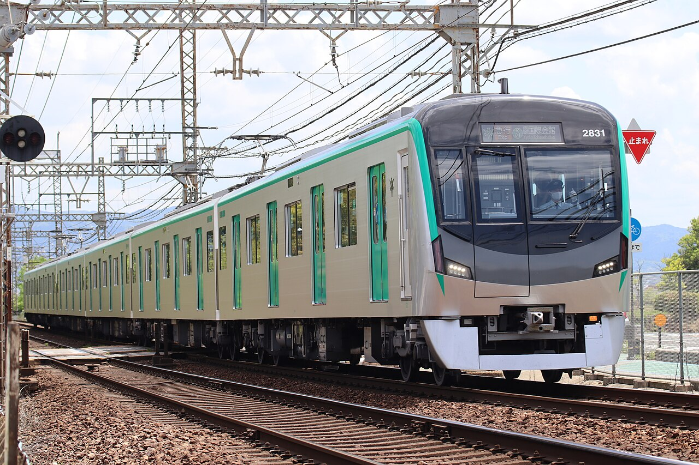

LIFE GUIDE
交通ガイド
京都市内を効率よく移動するための基本ルールと、交通手段の選び方を整理します。


おすすめの考え方
| 近距離 | 徒歩または自転車 |
|---|---|
| 南北移動 | 地下鉄烏丸線 |
| 東西移動 | 地下鉄東西線・私鉄 |
| 寺社への移動 | 鉄道＋徒歩、必要に応じてバス |
京都市内を効率よく移動するための基本ルールと、交通手段の選び方を整理します。

| 近距離 | 徒歩または自転車 |
|---|---|
| 南北移動 | 地下鉄烏丸線 |
| 東西移動 | 地下鉄東西線・私鉄 |
| 寺社への移動 | 鉄道＋徒歩、必要に応じてバス |